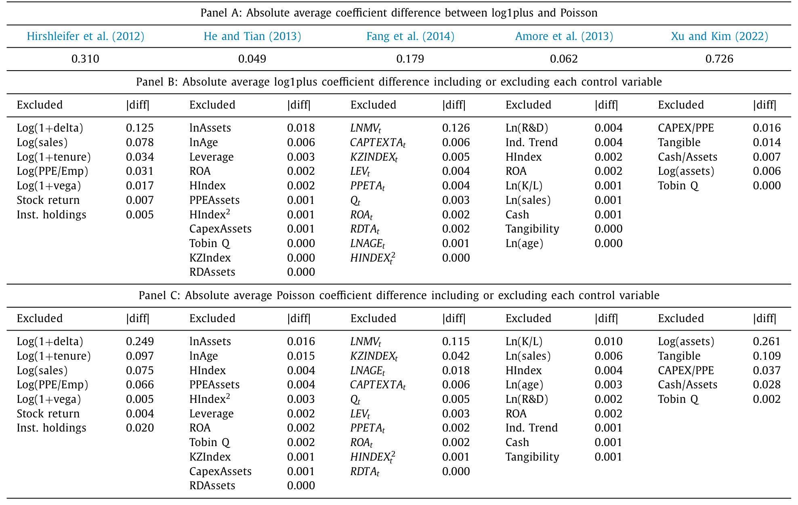
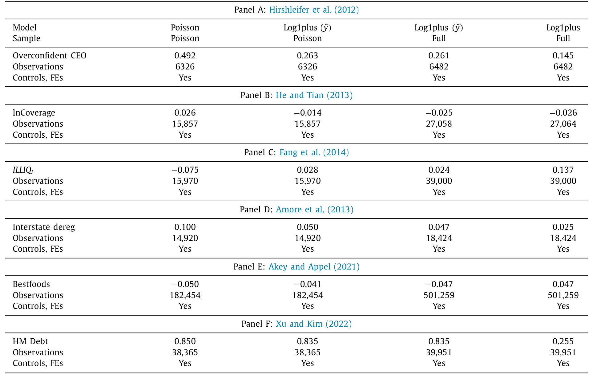
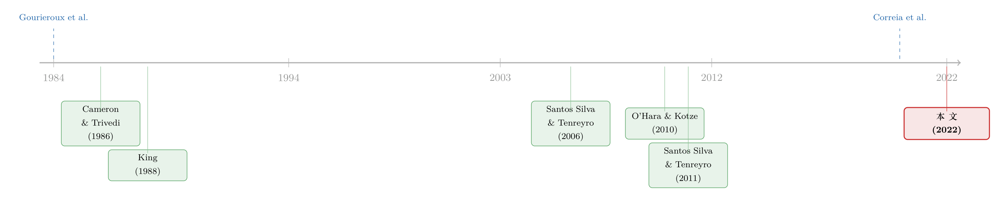

为了留住那些「零」，我们把结论的符号弄反了
本文读的是 Cohn, Liu & Wardlaw (2022, JFE)：当被解释变量是「专利数」「工伤数」「排污量」这类只能取非负整数、又在零处堆成一座山的计数 (count) 变量时，公司金融里最流行的做法——对 log(1+y) 跑线性回归——得到的系数没有任何可解释的经济含义，并且在期望意义上可能连符号都是错的；而一个朴素的固定效应泊松 (Poisson) 回归，在更宽松的假设下就能给出一致、可解释的半弹性估计。作者复制了六篇顶刊论文，发现换一个回归模型对系数的影响，比漏掉最重要的控制变量还要大。
1 一个你天天在用、却从没想清楚的「加一」
先讲一个几乎每个做实证的人都干过的事。
你手上有一个右偏得很厉害的被解释变量——比如公司一年拿到的专利数。Compustat 里大约 69% 的公司在某一年的专利授予数是零，剩下的公司里又有人一年几百项。这个分布既不连续、又在零处堆成一座山，直接跑线性回归 (OLS) 显然不合适：残差也会严重偏斜，效率低得可怕，置信区间都不好定。
于是你想起了教科书里的老办法：取对数。log(y) 把右偏的尾巴压平了，系数还能解释成半弹性 (semi-elasticity)，多好。可问题是，log(0) 没有定义——而你有一大半样本都是零。把这些零样本扔掉？那等于只研究「已经在创新的公司」，把外延边际 (extensive margin) 整个丢了。
怎么办？一个看起来无比自然、几乎不假思索的补救是：先加一，再取对数。于是 log(1+y) 横空出世。它对所有 y≥0 都有定义，零样本一个不少地保留下来，系数似乎还能继续当半弹性读。作者引用了一个 EconTwitter 的投票：69% 的受访者承认自己估过 log1plus 回归、或者用过它的近亲——反双曲正弦 (inverse hyperbolic sine, IHS) 变换。这不是个别人的偷懒，而是一个领域的集体习惯：2011–2020 年间在 JF、JFE、RFS 上建模公司年度专利计数的论文有 44 篇，其中 25 篇用了 log1plus，而这 25 篇里有 23 篇只用了这一种做法。
本文的全部张力就藏在这个「加一」里：它看起来只是一个无害的技术性修补，让公式不再除零；但作者要证明的是，正是这一步，把回归系数变成了一个没有经济含义、还可能指错方向的数字。
这篇文章我想只围绕这一个核心讲透：log(1+y) 到底错在哪，错得有多严重，又该用什么替代它。
2 先退一步：连 log(y) 都没那么干净
要理解 log(1+y) 的病灶，得先看清它的「健康版本」log(y) 本身就带着一处暗伤。这一步是 Santos Silva & Tenreyro (2006) 那篇著名的《The log of gravity》早就点破的，本文把它接了下去。
设想一个常弹性 (constant-elasticity) 模型，它的条件均值是指数形式：
$$E[y \mid x] = \exp(x\beta)$$
给它配一个乘性误差项 \(\eta\)，写成
$$y = \exp(x\beta)\,\eta$$
两边取对数：
$$\log(y) = x\beta + \log(\eta)$$
要让 OLS 一致地估出 \(\beta\)，需要的不是「\(\eta\) 与 \(x\) 独立」，而是更微妙的一条：\(E[\log(\eta)\mid x]\) 与 \(x\) 不相关。这里就埋了一个 Jensen 不等式的坑——\(\log(\cdot)\) 是凹函数，即便 \(\eta\) 本身的均值与 \(x\) 无关，\(\log(\eta)\) 的期望也会随 \(x\) 漂移，只要 \(\eta\) 的方差随 \(x\) 变化。换句话说，异方差 (heteroskedasticity) 会让对数线性回归不一致。
这是第一层警告（作者称 Takeaway 1）：异方差会让 log(y) 回归有偏、不一致。Santos Silva & Tenreyro (2006) 已经证到这里。
接着，一个自然的问题是：偏，到底偏多少？会不会偏到把符号都弄反？这正是本文相对前人的第一个增量。在引力贸易模型里，理论对系数符号有强先验（贸易量不可能随距离上升），所以大家只关心量级；可在公司金融里，我们几乎从不知道一个关系到底该是正还是负——符号本身就是结论。于是「会不会反号」就不再是吹毛求疵。
作者给了一个干净的二元例子：令 \(y = \exp(\beta x)\,\eta\)，其中 \(x \sim N(0, \sigma_x^2)\)，\(\eta\) 服从对数正态、均值为 1、其标准差随 \(x\) 变化：
$$\sigma_\eta(x) = \exp(\delta x)$$
这里的 \(\delta\) 就是异方差的「方向旋钮」：\(\delta>0\) 表示误差随 \(x\)「散开」(fanning out)，\(\delta<0\) 表示「收拢」(funnelling in)。他们在附录里证明，此时对数线性回归在 \(x\) 上的系数偏误恰好是
$$\text{bias} = -\,\frac{\delta}{2}$$
写成相对于真值的比例，就是 \(-\delta/(2\beta)\)。于是结论一目了然：只要 \(\delta/\beta > 2\)，偏误就大到足以让系数反号。而且这个偏误的方向是可知的——误差方差与某协变量正相关，系数就被往上抬；负相关，就被往下压。知道方向，至少能把估计值当成一个边界来读。
第二、三层警告（Takeaway 2、3）：异方差导致的偏误可以让 log(y) 系数反号；且偏误方向由「误差方差与协变量的相关性」符号决定。
记住这个 -δ/2——它会在下一节告诉我们，加了那个「1」之后，事情只会更糟。
3 真正的病灶：log(1+y) 的系数根本不是半弹性
现在回到主角。把零样本救回来的 log1plus 回归写出来：
$$\log(1+y) = x\lambda + \varphi$$
最诱人的误解是：既然加的那个常数 1 与 \(x\) 无关，那 \(\lambda_j\) 不就还是 \(y\) 关于 \(x_j\) 的半弹性（最多差个常数）吗？
不是。 这个直觉忽略了 Jensen 不等式。作者直接把 \(\lambda_j\) 推导出来，它和真正的常弹性系数 \(\beta_j\) 之间的关系是：
这条式子是整篇文章的「七寸」。它说的是：log1plus 系数 \(\lambda_j\) 等于真半弹性 \(\beta_j\) 乘上一个随 \(y\) 的水平而变的收缩因子 \(\tfrac{E[y\mid x]}{1+E[y\mid x]}\)。
- 当 \(E[y\mid x]\) 很大（公司平均一年几百项专利），收缩因子趋近 1，\(\lambda_j \approx \beta_j\)——可这时候本来就没几个零样本，你根本不需要那个「+1」；
- 当 \(E[y\mid x]\) 很小（绝大多数公司专利数是零或个位数），收缩因子趋近 0，\(\lambda_j\) 被压得几乎与 \(\beta_j\) 无关——而这恰恰是你最需要用
log1plus的场景。
Takeaway 4：log1plus 系数不能解释成 \(y\) 的半弹性，也无法从中还原出 \(y\) 与协变量之间任何有经济意义的关系。它在你最需要它的地方，恰恰最不可信。
可有人会退一步说：我不在乎量级，我只想知道符号、知道方向，行不行？
然后，本文给出了最致命的一击：连符号都靠不住，而且有两个几乎必然发生的偏误来源（Takeaway 5）。
第一个来源，是协变量之间的非线性关系。 任何一个像样的经济模型，只要让 \(\log(y)\) 与某个 \(x_j\) 线性，就会让 \(\log(1+y)\) 与 \(x_j\) 非线性。作者用一个极简例子把这层直觉摊开：设 \(\log(y)=\beta_1 x_1+\beta_2 x_2\)，真值 \(\beta_1=1,\ \beta_2=0\)，\(x_1\) 在 $[-4,4]$ 上均匀分布。按构造，\(x_2\) 与 \(y\) 毫无关系，可一旦 \(x_2 = x_1^2\)（一个再普通不过的非线性），在 log1plus 回归里 \(x_2\) 的系数就会显著为正——尽管 log(1+y) 按假设与 \(x_2\) 完全独立。也就是说，对一个变量的非线性误设，会污染其他变量的系数。这种事在现实里几乎无法避免。
第二个来源，是对误差矩的隐性假设。 在对数线性那一节，同方差的乘性误差还勉强够用；可加了「1」之后，要让估计一致，需要的异方差形式变成了 \(\varepsilon' = \exp(x\beta)\nu - 1\) 这种「任何合理经济模型都不会满足」的怪相。换句话说，log1plus 想一致，得靠运气。
最后还有一记回马枪：加的为什么非得是 1？换成任意常数 \(c\)，得到 logcplus 回归 \(\log(c+y)=x\lambda^c+\varphi^c\)，其系数会随 \(c\) 增大而机械地、任意地缩小。一个连「加几」都会改变结论量级的估计量，本身就说明它没有锚定在任何真实的经济量上。
（关于「一个看似无害的技术选择如何悄悄改写一篇已发表论文的结论」，可参见《一篇被作者亲手撤回的 JFE：当「公司债四因子」死于一次时间对齐错误》；这篇文章则把这种风险从「偶发的错误」上升成了「方法本身的系统性缺陷」。）
4 那该用什么？泊松回归的「以退为进」
讲到这里，张力已经满了：一边是有零、有偏、还右偏的数据，一边是会反号、不可解释的 log1plus。出路在哪？
作者的答案朴素得有点反高潮：固定效应泊松回归。它属于广义线性模型 (generalized linear model, GLM)，同样对应一个常弹性模型 \(E[y\mid x]=\exp(x\beta)\)，但有几条决定性的好处：
第一，它天然容纳零。 泊松对 \(y=0\) 没有任何障碍，外延边际和内涵边际一起估。
第二，它对一致性的要求极低。 这是关键的反转。泊松不需要数据真的服从泊松分布——靠的是伪极大似然 (pseudo maximum likelihood) 这套理论（Gourieroux, Monfort & Trognon, 1984）：只要条件均值 \(\exp(x\beta)\) 设对了，估计就一致，对更高阶矩不作任何要求。泊松那个臭名昭著的「条件均值=条件方差」限制，违反了只会损失效率，不会带来偏误。更妙的是，Santos Silva & Tenreyro (2011) 证明，哪怕 \(y\) 是连续的、或者有大量零，泊松照样给出有效的半弹性估计和标准误。
第三，也是对公司金融最要命的一条——它容得下可分离的组固定效应。 这正是 log1plus 的拥趸们最舍不得放弃的东西。负二项模型、零膨胀模型、Type I Tobit 在某些场景下或许更有效率，但它们都不能容纳可分离的固定效应（把组虚拟变量硬塞进去会触发附带参数问题 (incidental parameters problem)，导致系数有偏，见 Lancaster, 2000）。而图论与矩阵计算的进展，已经造出了能带高维多重固定效应的快速泊松算法——Stata 的 ppmlhdfe（Correia, Guimarães & Zylkin, 2020）、R 的 feglm。这一条几乎单枪匹马地决定了泊松在公司金融里的可用性。
有个常被误解的细节：泊松里的固定效应是乘性的，不是加性的。加性固定效应只移动均值，乘性固定效应同时缩放均值和标准差。这听上去非标准，但其实 log1plus 也隐含了乘性结构；而且对计数变量来说，乘性更自然——一家平均每年 10 项专利的公司，其专利数的年际标准差，本就大约是平均每年 1 项的公司的 10 倍。
5 复制：换个模型，比漏掉最重要的控制变量还离谱
理论说得再漂亮，也得回答那个最现实的问题：在真实论文里，这种差别到底是「小数点后的讲究」，还是「能掀翻结论」？
于是有了本文最有冲击力的一节。作者挑了六篇发表在顶级金融期刊上的论文，覆盖两类计数型结果——公司年度专利授予数与工厂年度毒物排放量——在每篇论文主表里选一个回归设定，分别用 log1plus 和泊松重估，对比关心的那个系数。
结果是：六个系数在所有六个案例里都明显不同；其中三个案例，符号是反的。 也就是说，「这个关系到底是正还是负」这件最基本的事，在现实应用里就取决于你选了哪个回归模型。

Table 5
更扎心的是一个用来「定标」的对比：在全部五个带控制变量的案例里，从 log1plus 换成泊松所引起的系数变化，比从模型里漏掉最重要的那个控制变量还要大，而且往往大得多。我们平时审稿时对「漏了关键控制变量」如临大敌，却对「选了哪种回归」毫不设防——本文等于说，后者才是房间里那头更大的象。

Table 6
（这种「方法论选择本身就足以左右因果方向」的警示，与《事件研究里的「假阳性」：当一根 t 值不再等于因果》是同一种精神——我们对系数的信心，常常建立在没被审视的默认设定之上。）
6 文献脉络
把这条线索捋一捋，会发现它并不新，只是一直被金融学界忽略。
最早，计数数据的计量基础来自 Gourieroux, Monfort & Trognon (1984) 的伪极大似然理论，以及 Cameron & Trivedi (1986) 对各类泊松/负二项估计量的系统比较。King (1988) 在政治学里就警告过：log1plus 这种做法会产生有偏估计，并主张用指数泊松回归。生态学界的 O'Hara & Kotze (2010) 干脆把论文题目写成《Do not log-transform count data》。
真正的理论枢纽是 Santos Silva & Tenreyro (2006) 的《The log of gravity》：他们在贸易引力模型里证明，异方差会让对数线性回归不一致，而泊松能绕开这个问题；其后 Santos Silva & Tenreyro (2011) 又补上一刀，证明泊松在连续、多零的数据上同样稳健。计算上的最后一块拼图，是 Correia, Guimarães & Zylkin (2020) 的高维固定效应快速泊松算法，让这套方法在公司金融的大面板上真正跑得动。

本文站在这条线索的末端，把它搬进公司金融并往前推了三步：第一，明确指出 log1plus（而非干净的 log(y)）特有的两类偏误；第二，证明偏误可以让系数反号，并刻画其方向与量级；第三，用六篇顶刊论文的复制，把「这事很严重」从理论命题变成了经验事实。在金融领域并行的应用工作里，Cohn & Wardlaw (2016)、Cohn, Nestoriak & Wardlaw (2020) 研究工伤、Akey & Appel (2021) 研究工业污染，都正面撞上了同一个计数数据的难题。
7 评论与延伸（Q&A + 研究方向）
(a) 几个可能的疑问
Q：log(y) 和 log(1+y) 不就差一个「1」吗，怎么会病灶完全不同？
差别在于「1」相对于 \(y\) 的水平。
log(y)的病主要来自异方差，且系数仍是干净的半弹性；log(1+y)则多出一个随 \(E[y\mid x]\) 变化的收缩因子 \(\tfrac{E[y|x]}{1+E[y|x]}\)，使系数彻底失去半弹性含义。\(y\) 越小（零越多），这个因子越把系数压扁——恰恰是在你最依赖「+1」的低计数场景里，它最不可信。
Q：泊松不是要求「均值=方差」吗？计数数据明明经常过度离散 (overdispersion)，这不就违反假设了？
这正是最大的误解。本文反复强调：均值=方差的限制一旦违反，损失的只是效率，不会带来偏误。泊松作为伪极大似然估计量，只要条件均值 \(\exp(x\beta)\) 设对就一致，对二阶及更高阶矩不作要求。所以过度离散不构成弃用泊松的理由——它只意味着标准误要稳健处理。
Q：那为什么不用负二项模型？它本来就是为过度离散设计的。
因为负二项、零膨胀、Tobit 这些模型不能容纳可分离的组固定效应。把组虚拟变量硬塞进去会触发附带参数问题（Lancaster, 2000）导致系数有偏；而 Stata 的
xtnbreg允许条件方差有组间差异、却不允许条件均值有，而我们关心的恰恰是条件均值。对依赖公司/年份固定效应的公司金融来说，这是硬伤。
Q：用 IHS（反双曲正弦）变换是不是能躲过这些问题？毕竟它在零处有定义，又近似对数。
不能。本文明确指出 IHS 会遭遇与
log1plus完全相同的问题：它同样是一个凹变换，同样让系数失去可解释性、同样可能反号。换汤不换药。
Q：既然换模型能让符号反过来，那是不是说之前那些用 log1plus 的论文结论都错了？
作者很克制，没有这么说。
log1plus系数的不可解释，未必就推翻某篇论文的核心叙事——但复制结果确实表明，结论对模型选择高度敏感，敏感到超过漏掉关键控制变量。审慎的读法是：这些结论需要用泊松重做一遍来确认方向，而不是默认它们已被证伪。
Q：泊松要求 \(E[y\mid x]=\exp(x\beta)\) 这个指数均值，万一真实的均值不是指数形式呢？
这是泊松自己的识别前提，也是它唯一较强的假设。好在指数均值对「非负、右偏、堆零」的计数变量是相当自然的函数形式；而相比
log1plus那种「任何合理模型都不满足」的隐性异方差要求，泊松的代价小得多。这是一种诚实的权衡，而非免费的午餐。
(b) 几个可能的研究问题与提案
- 把这套诊断搬到公司债与信用市场的计数型结果上。
- 【经济故事】信用市场里有大量天然的计数/计数型变量：一家公司一年内的评级调整次数、债券新发只数、违约/技术性违约事件数、被纳入指数的次数。这些变量同样右偏、堆零，却很少有人用泊松处理。若既有「评级下调 → 流动性恶化」之类的结论是用
log1plus得到的，方向可能并不稳。 -
【可行性】高。
Mergent FISD、TRACE、评级机构数据都现成；识别上沿用本文的「同一设定下log1plusvs 泊松」对比即可，是一个低成本、高信息量的复制型项目。 -
外资持有人与公司创新：用泊松重估「外资 → 专利」。
- 【经济故事】「外国机构持股是否促进/抑制创新」是一条热门线索，而专利计数正是本文点名的重灾区（44 篇专利计数论文里 25 篇用
log1plus）。外资持股的内生性又常用工具变量或指数纳入断点处理——而计数模型下的工具变量泊松 (Windmeijer & Santos Silva, 1997; Mullahy, 1997) 是一个尚未被充分利用的工具。 -
【可行性】中。专利数据（需做截断偏误修正，见 Dass, Nanda & Xiao, 2017）、
13F/FactSet外资持股都可得；难点在把外生变异（如 MSCI 纳入）与计数模型的工具变量框架干净地拼起来。 -
流动性事件计数：把「零交易日」当成正经的外延边际。
- 【经济故事】公司债的一大特征是大量「零成交日」。研究者常把零交易当噪声扔掉或粗暴
log1plus，但「债券今天到底交不交易」本身就是流动性的外延边际。用固定效应泊松对「月度成交笔数/活跃交易日数」建模，能把外延与内涵边际一起估出来。 -
【可行性】高。
TRACE逐笔数据可直接聚合成债券-月计数；ppmlhdfe能容纳债券与时间双向固定效应，技术上完全 doable。 -
复制范围的「规模化」：用规约曲线把模型敏感性系统化。
- 【经济故事】本文手工复制了六篇论文。一个自然的延伸是借鉴规约曲线分析 (specification curve analysis, Simonsohn, Simmons & Nelson, 2020)，对一大批计数型论文系统地跑「
log1plusvs 泊松 vs IHS」，量化「结论方向在多大比例上会翻转」。 - 【可行性】中。数据要靠复制包或重建，工作量大；但方法成熟、结论极具政策含义（对期刊与审稿规范），值得投入。
8 参考文献
- Cohn, J.B., Liu, Z., Wardlaw, M.I. (2022). Count (and count-like) data in finance. Journal of Financial Economics 146(2), 529–552.
- Santos Silva, J.M.C., Tenreyro, S. (2006). The log of gravity. Review of Economics and Statistics 88(4), 641–658.
- Santos Silva, J.M.C., Tenreyro, S. (2011). Further simulation evidence on the performance of the Poisson pseudo-maximum likelihood estimator. Economics Letters 112(2), 220–222.
- Gourieroux, C., Monfort, A., Trognon, A. (1984). Pseudo maximum likelihood methods: theory. Econometrica 52(3), 681–700.
- Cameron, A.C., Trivedi, P.K. (1986). Econometric models based on count data: comparisons and applications of some estimators and tests. Journal of Applied Econometrics 1(1), 29–53.
- King, G. (1988). Statistical models for political science event counts: bias in conventional procedures and evidence for the exponential Poisson regression model. American Journal of Political Science 32(3), 838–863.
- O'Hara, R., Kotze, J. (2010). Do not log-transform count data. Nature Precedings 1, 1–17.
- Correia, S., Guimarães, P., Zylkin, T. (2020). Fast Poisson estimation with high-dimensional fixed effects. Stata Journal 20(1), 95–115.
- Lancaster, T. (2000). The incidental parameter problem since 1948. Journal of Econometrics 95(2), 391–413.
- Cohn, J.B., Wardlaw, M.I. (2016). Financing constraints and workplace safety. Journal of Finance 71(5), 2017–2058.
- Akey, P., Appel, I. (2021). The limits of limited liability: evidence from industrial pollution. Journal of Finance 76(1), 5–55.
- Dass, N., Nanda, V., Xiao, S.C. (2017). Truncation bias corrections in patent data: implications for recent research on innovation. Journal of Corporate Finance 44, 353–374.
- Mullahy, J. (1997). Instrumental-variable estimation of count data models: applications to models of cigarette smoking behavior. Review of Economics and Statistics 79(4), 586–593.
- Windmeijer, F.A.G., Santos Silva, J.M.C. (1997). Endogeneity in count data models: an application to demand for health care. Journal of Applied Econometrics 12(3), 281–294.
- Simonsohn, U., Simmons, J.P., Nelson, L.D. (2020). Specification curve analysis. Nature Human Behaviour 4(11), 1208–1214.
我的总评：这是一篇「方法论体检报告」式的论文，贡献不在于发明新估计量——泊松伪极大似然早已有之——而在于把一条沉睡多年的计量警告精准地翻译到公司金融的语境，并用复制把代价量化得无可辩驳。它最漂亮的一步，是把 log1plus 系数写成 \(\lambda_j = \tfrac{E[y|x]}{1+E[y|x]}\beta_j\)，一眼看穿「这个数到底是什么」。要说担忧，有二：其一，泊松的指数均值假设 \(E[y\mid x]=\exp(x\beta)\) 并非免费，当真实数据生成过程偏离指数形式时它也会有偏，本文对这一前提的检验着墨较少；其二，复制只覆盖了专利与排污两类结果、六篇论文，「三个反号」固然触目，但能否外推到全部计数型应用，仍需更大样本的系统证据。我接下来最想看到的，是有人把这套对比规模化——用规约曲线扫一遍过去十年的计数型实证，告诉我们到底有多大比例的已发表结论，其方向经不起换一个回归模型的考验。